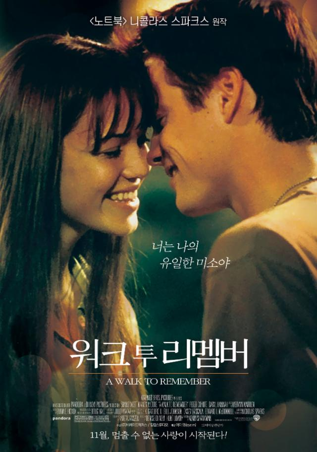
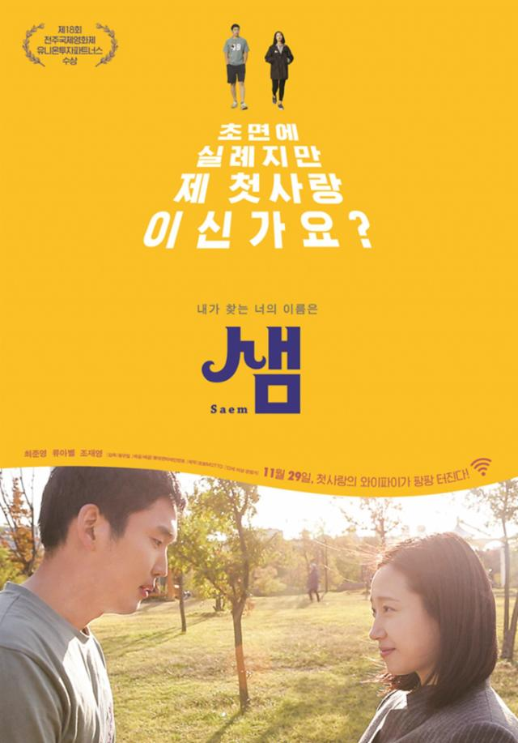
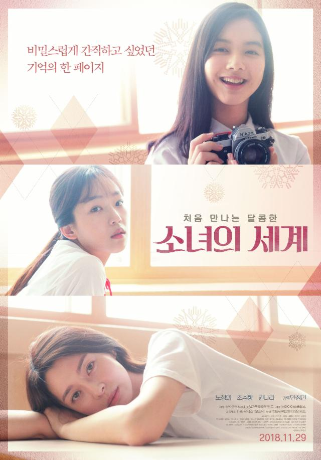
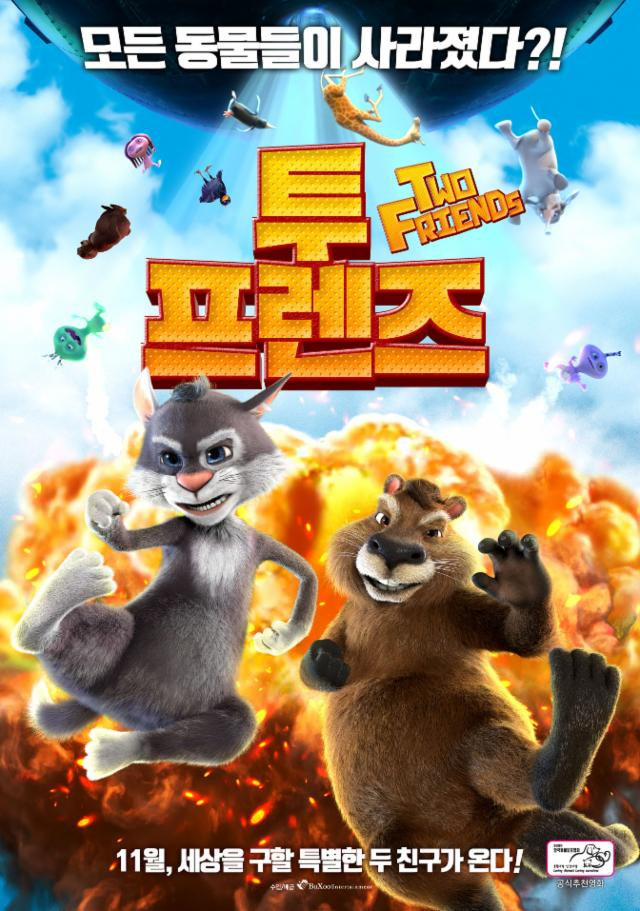

마스네의 매혹적인 오페라가 베르트랑 드 비이의
지휘와 희극오페라 연출의 대가 로랑 펠리의 연출로 메트에서 초연된다.
로랑 펠리는 메트에서 이미 도니체티의 '연대의 딸'과 마스네의 '마농'
연출로 찬사를 받았다. 프랑스어 원제는 ‘샹드리용’이며 여주인공 신데렐라의
이름도 이 오페라 속에서는 ‘샹드리용’으로 불린다. 조이스 디도나토가
이 작품의 타이틀 롤을 맡아 자신의 메트 배역을 또 하나 첨가했다.
이 작품은 로열오페라하우스, 바르셀로나 리세우 대극장, 브뤼셀 왕립극장,
릴 오페라와 메트 오페라가 공동으로 제작했으며, 산타페 오페라에서
첫 공연이 이루어졌다.

워크 투 리멤버
전혀 어울릴 것 같지 않은 두 사람의 ‘썸' 스캔들!
아웃사이더 ‘제이미’에게 일진 킹카 ‘랜든’이 빠졌다고?
“날 사랑하지 않겠다고 약속해!”
서로에 대한 마음을 부정하지만 자기도 모르게 사랑에 빠져버린 두 사람.
‘썸’이 ‘사랑’으로 발전하자 둘의 만남을 방해하는 사람들이 하나 둘 나타나는데…
주변의 방해해도 불구하고 사랑을 키워가는 두 사람.
그런 그들 앞에 가혹한 운명이 기다리고 있었으니,
과연 ‘랜든’과 ‘제이미’는 이대로 사랑할 수 있을까?

샘
초면에 실례지만, 제 첫사랑이신가요?
교통사고 후유증으로 타인의 얼굴을 알아보지 못하는 ‘두상’은
어릴 적 비 오던 날, 우산을 씌워준 그녀, 첫사랑 ‘샘’을 잊지 못한다.
서울로 무작정 상경해 친구의 집에 머물며 ‘샘’을 찾던 두상은
첫사랑으로 보이는 그녀로부터 뺑소니를 당한다.
그리고, 친구의 룸메이트 또한 그토록 그리워하던 ‘샘’인 것만 같고
우연히 거리에서 만난 여자의 향기 또한 ‘샘’이 분명하다!
그녀인 듯 그녀 아닌 그녀 같은 너, 샘
과연, 첫사랑 ‘샘’을 찾을 수 있을까?

소녀의 세계
다시 돌아오지 않을 17살의 여름,
무지개빛 감정에 눈 뜨다!
대책 없이 씩씩한 고1 '선화'(노정의)는
우연히 연극반 선배 '수연'(조수향)의 눈에 띄어
줄리엣 역에 캐스팅된다.
로미오 역을 맡은 전교생의 우상이자 비밀스런 선배
'하남'(나라)과 가까워질수록 알쏭달쏭한 감정이 싹트는데…
나만의 비밀로 남겨질 줄 알았던 그 날의 기억,
소녀들의 비밀스러운 세계가 공개됩니다!
다이빙 그녀에게 빠지다
“난 그저 움직이는 건데, 사람들은 달아났다고 해”
누구보다 자유로운 삶을 즐기던 사진가 파스.
우연히 여행지에서 만난 전직 종군기자 세자르와 깊은 사랑에 빠지고 곧 아이도 생긴다.
아직 마음의 준비가 안 된 파스에게 엄마가 되는 일은 불러오는 배와 달리 공허하다.
답답한 현실을 견디지 못한 파스는 결국 잃어버린 자신을 찾아 떠난다.
몇 달 후, 세자르는 예멘에 파스가 있다는 소식을 듣고 그녀를 찾아 나서는데…

더빙 투 프렌즈
외계인에게 동물 친구들이 납치됐다?!
동물 친구들을 구하기 위한 맥스와 밥의 위험천만 모험 어드벤처!
유명해지는게 소원인 고양이 맥스, 부지런하고 똑똑한 비버 밥, 그리고 호기심 많은 소년 바즈와
지구로 에너지 자원을 찾기 위해 온 외계인 3총사 ‘지크’, ‘자크‘, ’자카’는 친구가 된다.
하지만, 즐거운 시간도 잠시… 외계인 악당 스크래처 일당이 숲 속 모든 동물 친구들을 납치해가는데…
과연, 맥스와 밥은 악당에게 납치된 동물 친구들을 무사히 구출해내고 외계인 3총사와 다시 친구가 될 수 있을까?
11월, 위기에 놓인 숲 속 친구들을 구하기 위한 모험이 시작된다!